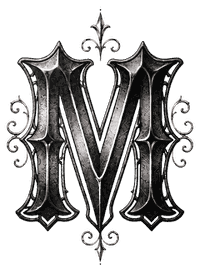

I
L'Omertà
L'interdiction formelle de parler aux autorités ou de révéler les secrets de la Famiglia sous peine de mort.

Famille MoniRoxwood · Flashback FA · Depuis l'Italie
Silence · Loyauté · Famiglia
Née de la Famiglia Moncini, la famille Moni bâtit à Los Santos ce que son père a bâti en Italie : un empire discret mais mémorable.
De l'Italie à Los Santos
Avant son arrivée à Los Santos, la famille Moni se prénommait Famiglia Moncini, et était reconnue à travers toute l'Italie. À sa tête se trouvait le Don Gianni Moncini, qui dirigeait la famille sur des principes traditionnels tels que l'honneur et la loyauté.
Un soir tout bascule lorsque Vitelli, son frère d'arme, qui nourrissait en secret une immense rancœur depuis des années, le trahit. Gianni, suspicieux, décide d'exfiltrer ses enfants vers Los Santos auprès d'un vieil ami, avant de mourir des mains de ses ennemis. Rosalia, son enfant la plus âgée, se voit contrainte de s'enfuir accompagnée de ses frères et sœurs.
Arrivés sur LS, Raymond Carter, qui avait connu Gianni des années auparavant, les aide à changer de vie. Très attachés à leur nom de famille, ils en conservent la base pour se créer leur nouvelle identité. Moncini Rosalia devient alors Moni Lov, et reprend les rênes de la famille afin de bâtir à Los Santos ce que son père a auparavant bâti en Italie : un empire discret mais mémorable.
« Je jure de porter le nom de la famiglia avec respect, loyauté et silence. Je jure de ne jamais placer mon intérêt avant celui des miens. Que mes actes servent notre héritage, que mes paroles ne trahissent jamais notre nom, et que ma place soit méritée par ce que je donne, non par ce que je réclame. Dans l'ombre comme dans la lumière, je resterai fidèle à la famiglia. »
Le Serment
Ce qui fait tenir la Famiglia
L'interdiction formelle de parler aux autorités ou de révéler les secrets de la Famiglia sous peine de mort.
Le dévouement total envers les membres de la Famiglia et l'obéissance aveugle à la hiérarchie.
Un engagement pris, même verbal, est sacré et irrévocable — le trahir équivaut à une trahison envers la Famiglia elle-même.
Le devoir de venger toute offense ou trahison faite à la Famiglia.
Chacun connaît sa place
Clichés de la famille
Rejoindre la famille
La famille Moni se joue sur {{serveur}}. Pour la croiser en ville, c'est par ici.
Se connecter au serveurUn entretien, une période d'essai, puis le serment : tout commence sur le Discord de recrutement.
Rejoindre le serveurUn entretien, une période d'essai, puis le serment. La famille ne recrute pas : elle choisit.